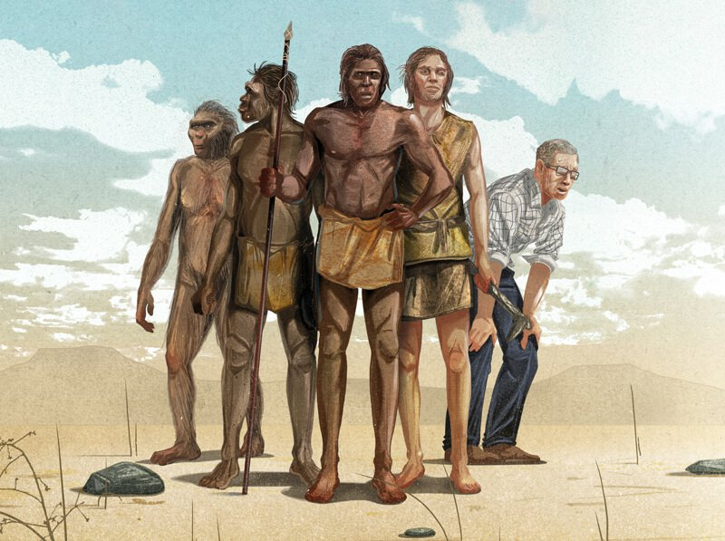
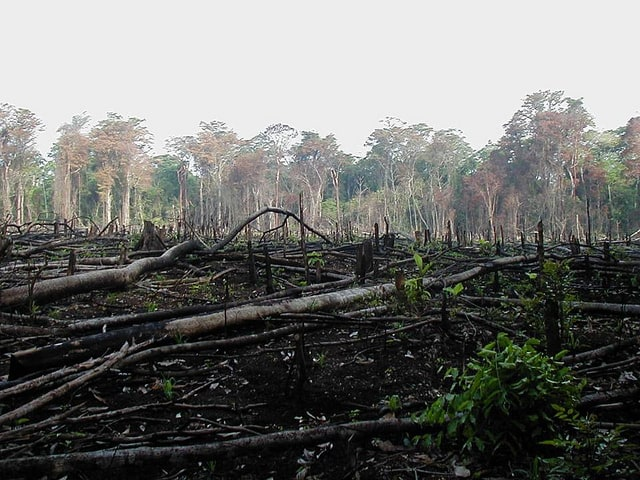
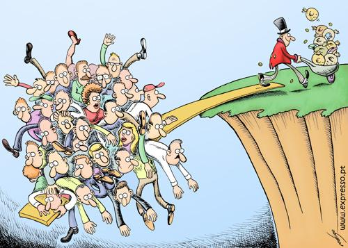
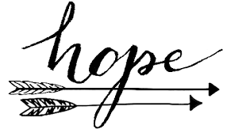

Humanity - a reality check from past to present. The good, the bad and the ugly

Past: 20th century AD and before
Not so bad
Humans were still learning and adapting to nature
- More physical work to do.
- Less comfortable physical existence in terms of housing, clothing, heating, energy, health facility, food production etc.
- Higher mortality risk. Attack from animals. Climate. Weather. Diseases. Not such a developed surgery and medical system in west. But there was Ayurveda and chi gung in East.
- Uncleanliness and lack of hygene
The ugly
Problems faced by humans between humans
- Communalism and division between human to human
- Attack from each other - loot, crimes and war
- Ruled by power and fear - State, Religion
- Superstition also ruled the human mind
The good
The good in the past
- For every human the world was full of wonders to be discovered!
- Joy of abundant natural living and first hand knowledge of nature
- Joy of co-existence, social company and codependence
- Joy of hard work, fitness & strength of physical bodies and healthy eating
- Joy of simple living
- Joy of healthy air, water and earth
- The scope of good always existed
ALL THAT GOOD IS MOSTLY GONE NOW OR GOING!
Present: In 21st century
The biggest danger and exploitation faced by any human is from human itself
Really bad and dangerous at mass scale
Problems faced with nature:

- Massive reduction in natural life on Earth
- Dwindling natural resources
- Pollution in rivers, oceans, land, air
- Global warming
- Increasing unsustainability of the planet for all Life include humanity
Ugly still and even more dangerous
Problems faced within

- Still ongoing - Communalism and division between human to human
- Still ongoing - Attack from each other - loot, crimes, war and refugee crisis
- Still ongoing - Common humans ruled by power and fear - State and religion have become secondary and the main power is NOW with Capitalism
- Education is feeding illusion and creating mindless machines instead of mindful humans
- Economic bubble & inequality: profit mentality, hollow & infinite growth spiral, interest based economy, rich become richer by doing nothing except depositing money in bank, poor become poorer by paying loan interest to the bank which pays interest to the rich.
- Consumerism: Life is more disconnected with society, land & nature
- More dependence on currency for survival than real nature, human knowledge, social support and material wealth
- Anti social existence: Humans are said to be social but world is divided in countries with imagined borders. Family, communities and neighborhood are also breaking. Everyone is individualistically left to be on their own for survival and without appropriate emotional comfort and nurturing relationships.
- Lies, deciet, lack of trust and confidence in each other at every level
- Tension and stress: Every family too involved in act of “doing” for a living, while most have forgotten to simply “be” - to be “human”. T enjoy life as human family and relationships.
- From being locally sustainable as per basic needs in past, humans are now dependent on faraway communities for food, basic survival and also higer aspirational needs
- Poor quality of food
Mixed good and bad
- Scientific, technological and material development: More physical comfort to some (though not all)
- Humanity has greater access to power but is being ruled by power instead of ruling it (by wisdom)
- Democracies emerged in place of dictatorship, kingship etc. though still not a perfect solution as its fundamental ruling tenet is again - power, and not consensus based on human wisdom.
- Plastic and cement
The good of 21st century
- Ease of distant communication, travel and greater access to information and stimulus
- Greater scientific and technical knowhow and capability
- The hold of superstition is gone and is going.
- The education of Yoga and spirituality and education in general spread all across the world
- People are realising what has happened, is happening and the direction we are heading.
- People are realising what is a human, what is true human potential and how it is still waiting to be unleashed
- The need of inner peace & resolution and outer peace & resolution is being felt more and more across successive generations
- The scope of good, and permanent resolution for humanity still exists and is even a greater possibility thanks to distant travel, communication and technology
Is there any real and unadulterated joy left in today’s world, for a common human being, in most of the moments, across most of the places, countries, communities or families?
Conclusion
- Humanity is still far away from realising its full potential
- Some get to enjoy physical comforts and sense pleasures, but ALL are in some misery or other.
- It is facing real chance of mass extinction in 21st century, from war, economic collapse, climate change.
- And all our own children to survive the extinction are going to face a really hard time.
- Time to transition into full human consciousness and capability, as a species and undivided society, is NOW!
